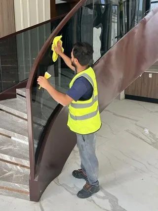

تنظيف المحلات التجارية والمعارض بالرياض قبل الافتتاح وبعده
الزبون يقرر في أول ثواني هل يكمل جولته في المحل أو يطلع. يشوف الواجهة، والأرضية، والأرفف، والإضاءة، ويحس بالريحة. ولو لقى غبار على البضاعة أو بصمات على الزجاج، يتغير انطباعه عن المكان كله. وفي أسواق الرياض ومجمعاتها، صار تنظيف محلات بالرياض جزء من هوية النشاط نفسه، زي الديكور والشعار.
في هالدليل نمشي معك من مرحلة تنظيف محل قبل الافتتاح بالرياض بعد ما تخلص التجهيزات، لين الجدول اليومي والدوري بعد ما تفتح. ونخصص جزء لـتنظيف معارض السيارات بالرياض، لأن المعارض لها تحديات خاصة: زجاج كبير، وأرضيات لامعة، وغبار يقعد على سيارات معروضة.
💡 هالمقال إرشادي عن التنظيف فقط. اشتراطات البلدية والدفاع المدني وتراخيص النشاط تراجعها من الجهات المختصة مباشرة، وإدارة المجمع لو محلك داخل مجمع لها اشتراطاتها كمان.
تنظيف محلات بالرياض: الانطباع الأول جزء من هوية النشاط
المحل اللي يبيع ملابس فخمة، والمعرض اللي يعرض سيارات، والمحل اللي يبيع إلكترونيات، كلهم يبيعون فكرة قبل المنتج. والنظافة جزء من هالفكرة. الأرضية اللامعة، والزجاج الصافي، والأرفف اللي ما عليها غبار، كلها تقول للزبون إن المكان معتنى فيه، وإن اللي يبيعونه معتنى فيه كمان.
وفي المقابل، الزبون يلاحظ التفاصيل الصغيرة أكثر من ما نتوقع: لمبة محروقة في الواجهة، أو زاوية فيها كراتين، أو مرآة غرفة القياس فيها بقع. ولهذا تنظيف محلات بالرياض ما يكون شغل مرة في الأسبوع، يكون نظام يومي له جدول واضح.
موقف من أسواق الرياض
تخيّل صاحب محل ملابس جديد في مجمع بشمال الرياض. حدد موعد الافتتاح، وطبع الإعلانات، ونزل البضاعة في المخزن. وقبل الافتتاح بيوم، دخل المحل بعد ما طلع فريق الديكور، ولقى على الأرفف طبقة غبار ناعم من قص الجبس، وعلى الزجاج نقاط دهان ولاصق من الملصقات، وفي زوايا الأرضية بقايا أسمنت ناشفة.
العامل اللي عنده بدأ يمسح بفوطة ناشفة، فطار الغبار وقعد على الأرفف مرة ثانية. وحاول يشيل الأسمنت بأداة حادة، فخدش البلاط. وشغل المكيف عشان يبرد المكان، فطلع من الفتحات غبار جبس ثاني نزل على كل شي. ولما حطوا البضاعة، تغبرت الملابس من الأرفف. العامل تعب، لكن الترتيب والتوقيت كانوا غلط. ومثل هالموقف يتكرر كثير في تنظيف محل قبل الافتتاح بالرياض، لأن تنظيف ما بعد التركيب يحتاج أدوات وطريقة غير التنظيف اليومي.
تنظيف محل قبل الافتتاح بالرياض: بعد انتهاء التجهيزات والديكور
بعد ما يخلص الديكور والتركيبات، المحل يكون فيه نوع وسخ مختلف عن الوسخ اليومي: غبار ناعم جدًا من الجبس والدهان والقص، وبقايا تركيب، ونقاط دهان ولاصق، وأحيانًا أسمنت وروبة. وهذا يحتاج تنظيف ما بعد التركيب، وهو يختلف عن التنظيف التشغيلي اللي يجي بعد الافتتاح. وفي تنظيف محل قبل الافتتاح بالرياض، هذي الأجزاء الأساسية:
إزالة الغبار الدقيق وبقايا التركيب
الغبار الناعم يقعد على كل سطح، ويدخل داخل الأدراج والخزائن وفتحات التكييف. والفوطة الناشفة تطيره ما تشيله. فالأفضل شفطه أول بمكنسة بفلتر مناسب، وبعدين مسح بفوط مايكروفايبر مبللة شوي. وبقايا التركيب، مثل قطع البلاستيك والكراتين والمسامير، تتجمع وتطلع قبل أي تنظيف.
الأرضيات
بقايا الأسمنت والروبة ونقاط الدهان على الأرضية تحتاج إزالة بأدوات ومواد مناسبة لنوع الأرضية، عشان ما تنخدش. والأرضيات اللامعة مثل الرخام والبورسلان تحتاج عناية زيادة. وبعد إزالة البقايا، تنجلي الأرضية بالمكينة المناسبة لنوعها.
الزجاج والواجهات
الواجهة الزجاجية أول شي يشوفه الزبون. وبعد التجهيزات، يكون عليها لاصق من الحماية أو الملصقات، ونقاط دهان، وغبار. وتنظيفها يحتاج كشاط مخصص للزجاج، ومنظف مناسب، وممسحة بمطاط، من الداخل والخارج.
الأرفف ووحدات العرض
الأرفف والكاونترات ووحدات العرض تنظف من الداخل والخارج قبل ما تنحط عليها البضاعة. والأدراج والخزائن من الداخل كمان، لأن الغبار يدخلها حتى لو كانت مسكرة.
الأسقف والإضاءة
الإضاءة المدمجة والسبوتات والثريات تمسك غبار التجهيزات، وتضعف الضوء. نظفها والكهرباء مفصولة، وامسح حواف الأسقف المستعارة وفتحات الإضاءة.
التكييف
فتحات التكييف وفلاتره تمسك غبار الجبس والدهان. ولو شغلت المكيف قبل تنظيفها، بينفخ الغبار على كل شي نظفته. فنظف الفتحات، ونسق مع فني التكييف لتنظيف الفلاتر أو تغييرها قبل الافتتاح.
وفي تنظيف محلات بالرياض الجديد، هالمرحلة هي اللي تحدد هل المحل يبدأ نظيف فعلًا أو يبدأ وفيه غبار يرجع يطلع أسابيع. وفي تنظيف محل قبل الافتتاح بالرياض، خل البضاعة برا المحل لين يخلص هالتنظيف.
محتاج تنظيف احترافي؟
خلصت التجهيزات وموعد الافتتاح قرب؟ فريقنا يجهز المحل أو المعرض للافتتاح بعد ما يطلع آخر فني، من الأسقف والإضاءة إلى الزجاج والأرضيات
جدول تنظيف قبل الافتتاح
الترتيب المنطقي في تنظيف محل قبل الافتتاح بالرياض: من الأعلى للأسفل، ومن الداخل للخارج، والأرضيات آخر شي. والتوقيت المناسب يكون بعد ما يطلع آخر فني، وقبل الافتتاح بأيام، عشان يكون فيه وقت لترتيب البضاعة وتصليح أي شي ينكشف:
| المرحلة | المهام |
|---|---|
| بعد خروج آخر فني | تجميع وإخراج بقايا التركيب والكراتين، وشفط الغبار الثقيل |
| المرحلة الأولى | الأسقف والإضاءة وفتحات التكييف، ثم الجدران |
| المرحلة الثانية | الأرفف ووحدات العرض والكاونترات والأدراج من الداخل والخارج |
| المرحلة الثالثة | الزجاج والواجهات والمرايا وغرف القياس |
| المرحلة الرابعة | المخزن ودورات المياه ومنطقة العاملين |
| المرحلة الأخيرة | إزالة بقايا الأسمنت والدهان من الأرضيات، ثم جلي الأرضيات |
| قبل الافتتاح بيوم | مسحة خفيفة بعد ترتيب البضاعة، وتنظيف المدخل والواجهة من برا |
والتنظيف بعد ترتيب البضاعة يكون خفيف، لأن الشغل الثقيل خلص قبل. وفي تنظيف محلات بالرياض، هالترتيب يمنع إن البضاعة تتغبر من الأرفف أو الأرضيات.
تنظيف المحل بعد الافتتاح: يومي وأسبوعي وشهري
بعد الافتتاح، يبدأ التنظيف التشغيلي. وهذا جدول عام تعدله حسب نشاطك ومساحتك:
يوميًا قبل الفتح
- مسح الواجهة الزجاجية والباب ومقبضه
- مسح الأرضيات أو شفطها حسب نوعها
- مسح الكاونتر وأجهزة الدفع
- نفض الغبار عن الأرفف والبضاعة الظاهرة
- التأكد إن الإضاءة كلها شغالة
- جولة على غرف القياس ودورات المياه
يوميًا بعد الإغلاق
- تفريغ السلال وإخراج الكراتين
- مسح الأرضيات بالكامل، مع الزوايا وتحت وحدات العرض قدر الإمكان
- تنظيف دورات المياه ومنطقة العاملين
- مسح المرايا وغرف القياس
- ترتيب المخزن الخلفي
أسبوعيًا
- الأرفف العالية وأعلى وحدات العرض
- الزجاج من الداخل والخارج بالكامل
- الإضاءة الظاهرة ولوحات الأسعار
- خلف الكاونتر وتحت وحدات العرض الثقيلة
شهريًا
- فتحات التكييف وفلاتره بالتنسيق مع الصيانة
- جلي الأرضيات اللامعة
- الأسقف وحواف الإضاءة المدمجة
- المخزن بالكامل وتحت الرفوف
والمحلات اللي فيها حركة عالية، أو قريبة من مداخل المجمعات، تحتاج تكرار أعلى. وفي تنظيف محلات بالرياض، الجدول اللي يتعلق في المخزن ويتوقع عليه يومي يخلي الكل يعرف وش عليه.
المعارض وصالات العرض عمومًا
المعارض وصالات العرض مساحاتها أكبر من المحلات العادية، وفيها تفاصيل تبين الوسخ أكثر:
- الزجاج الكبير: الواجهات والقواطع الزجاجية تبين البصمات والغبار من بعيد، وتحتاج مسح يومي للأجزاء اللي توصلها الأيدي وأسبوعي للباقي
- الأرضيات اللامعة: الرخام والبورسلان والإيبوكسي تبين آثار الأقدام والبقع، وتحتاج مسح يومي ومواد مناسبة
- الإضاءة: الإضاءة القوية تبين أي غبار على الأسطح، والإضاءة الضعيفة بسبب الغبار تطفي المعروضات
- أرفف ومنصات العرض: تنمسح يوميًا من الغبار، وتنظف بالكامل أسبوعيًا
وفي صالات عرض الأثاث أو الإلكترونيات، المعروضات نفسها تحتاج مسح بمواد مناسبة لكل نوع. وفي تنظيف محلات بالرياض للمعارض، كبر المساحة يعني تقسيم الشغل على مناطق. ونفس الفكرة تنطبق على تنظيف معارض السيارات بالرياض، بس بتفاصيل أكثر.
تنظيف معارض السيارات بالرياض: الزجاج والأرضيات والسيارات المعروضة
معرض السيارات مكان الزبون يقعد فيه وقت أطول، يتفرج ويقارن ويجلس في السيارة. وكل تفصيلة تنلاحظ. وفي تنظيف معارض السيارات بالرياض، هذي أهم الأجزاء:
واجهات الزجاج والبصمات
الواجهات الزجاجية في المعارض غالبًا كبيرة جدًا، والزوار يلمسونها وهم يتفرجون من برا. والبصمات تبان أكثر مع إضاءة المعرض في الليل. فالأجزاء اللي على مستوى اليد تنمسح أكثر من مرة في اليوم، والواجهة كاملة من الداخل والخارج بشكل دوري. والأجزاء العالية تحتاج معدات آمنة. وفي تنظيف معارض السيارات بالرياض، الزجاج هو أول شي يحكم عليه الزائر من الشارع.
الأرضيات: الرخام والإيبوكسي والبورسلان
أرضيات المعارض غالبًا لامعة وفاتحة أو غامقة، وكلها تبين أي أثر. والإيبوكسي يحتاج مواد ما تفقده لمعته، والرخام يحتاج منظف متعادل. وإطارات السيارات المعروضة لما تتحرك تترك آثار، والزبائن يدخلون بغبار الشارع. وفي تنظيف معارض السيارات بالرياض، الأرضية تنمسح يوميًا قبل الفتح، وتنجلي بشكل دوري.
مناطق الاستقبال والانتظار
طاولات المبيعات، وكراسي الانتظار، وركن القهوة، ودورات المياه. هذي الأماكن يقعد فيها الزبون وقت يتفاوض أو ينتظر، ونظافتها جزء من تجربته. وفي تنظيف معارض السيارات بالرياض، ركن الضيافة بالذات يحتاج جولات متكررة خلال اليوم.
السيارات المعروضة من الداخل
تنظيف السيارات المعروضة من الداخل خدمة منفصلة عن تنظيف المعرض. الزوار يفتحون الأبواب ويقعدون ويلمسون الدركسون والشاشات، والغبار يدخل. وتنظيف المقصورة يحتاج مواد مناسبة للجلد والبلاستيك والشاشات، وغالبًا يتولاه فريق متخصص في تجهيز السيارات أو حسب سياسة الوكالة. وفي تنظيف معارض السيارات بالرياض، الأفضل تحدد من البداية هل تنظيف السيارات من الداخل داخل في عقد التنظيف أو منفصل.
الغبار الصحراوي في الرياض
المعارض غالبًا لها أبواب كبيرة تنفتح لدخول وخروج السيارات، وهذا يدخل غبار الرياض بكميات أكبر من المحلات العادية. وبعد العواصف، الغبار يقعد على السيارات المعروضة نفسها. ومسح السيارات من الغبار يحتاج فوط مايكروفايبر نظيفة وطريقة ما تخدش الطلاء، لأن الفوطة الناشفة مع الغبار تعمل خدوش ناعمة. وفي تنظيف معارض السيارات بالرياض، خل جولة إضافية بعد كل عاصفة.

المخازن ومنطقة العاملين ودورات المياه
المخزن الخلفي يتنسى كثير لأنه بعيد عن الزبون. لكنه المكان اللي تنخزن فيه البضاعة قبل ما توصل الأرفف، ولو كان مليان غبار، بتطلع البضاعة متغبرة. رتب المخزن على رفوف مرفوعة عن الأرض، وطلع الكراتين الفاضية أول بأول، ونظف الأرضية وتحت الرفوف أسبوعيًا. ومنطقة استراحة العاملين ودورات المياه تحتاج تنظيف يومي، لأن العاملين يتنقلون بينها وبين صالة البيع. وفي تنظيف محلات بالرياض، المخزن المرتب يسهل الشغل ويقلل الغبار في المحل كله. وفي تنظيف محل قبل الافتتاح بالرياض، المخزن والحمامات يتنظفون في نفس الجولة الأولى قبل الافتتاح.
محلات الملابس وغرف القياس
محل الملابس يعتمد على شكل البضاعة، والملابس تمسك الغبار بسهولة. والأرفف والعلاقات والطاولات اللي عليها الملابس المطوية تنفض يوميًا، لأن الغبار يقعد على الكتوف والطيات ويبان. وغرف القياس من أكثر الأماكن اللي يحكم منها الزبون على تنظيف محلات بالرياض: المرآة لازم تكون بدون بقع، والأرضية نظيفة من الشعر والخيوط، والكرسي والعلاقة نظيفة، والستارة أو الباب نظيف. وخل جولة على غرف القياس أكثر من مرة في اليوم، خصوصًا وقت الزحمة.
- المرايا: مسح يومي، وأكثر من مرة في الذروة
- الأرضيات في غرف القياس: شفط أو كنس للشعر والخيوط
- العلاقات والأرفف: نفض الغبار يوميًا
- طاولات الطي: مسح قبل ترتيب البضاعة
وفي تنظيف محلات بالرياض لمحلات الملابس، المخزن بالذات يحتاج ترتيب، لأن الكراتين المفتوحة تنشر الوبر والغبار.
محلات الإلكترونيات والجوالات
الشاشات المعروضة والأجهزة التجريبية تنلمس طول اليوم، والبصمات عليها تبان مع الإضاءة. وتنظيفها يكون بفوط مايكروفايبر ومنتجات مناسبة للشاشات حسب تعليمات الشركة المصنعة، بدون رش مباشر. ومناطق تجربة الأجهزة تنمسح أكثر من مرة في اليوم. والكاونترات الزجاجية تبين البصمات أكثر من غيرها. وفي تنظيف محلات بالرياض لمحلات الإلكترونيات، الغبار على الأجهزة والأسلاك خلف وحدات العرض يبان في الصور اللي يصورها الزبون.
المطاعم الخفيفة والكافيهات داخل المجمعات
المطاعم الخفيفة والكافيهات لها جدول تنظيف خاص بالمطبخ والأغذية، وله اشتراطات تراجعها من الجهات المختصة. لكن الجزء اللي يشوفه الزبون، مثل الواجهة والكاونتر والطاولات والكراسي والأرضيات، يمشي بنفس منطق المحلات: تنظيف ثقيل قبل الفتح وبعد الإغلاق، وجولات سريعة وقت الزحمة. وفي تنظيف محلات بالرياض للكافيهات، الطاولات والكراسي تنمسح بعد كل زبون، والأرضية حول الكاونتر تتابع لأنها تتوسخ أسرع.
المحل داخل مجمع مقابل المحل على الشارع
المحل داخل مجمع تجاري غالبًا أنظف من برا، لأن المجمع مكيف ومقفل، لكن عنده قيود: أوقات محددة لدخول عمال التنظيف، ومداخل خدمة، وقواعد للمعدات والمواد. أما المحل على الشارع، فواجهته مكشوفة لغبار الرياض والشمس، والرصيف قدامه جزء من انطباع الزبون، والباب ينفتح على الشارع مباشرة فيدخل الغبار أكثر. وفي تنظيف محلات بالرياض على الشارع، الواجهة والمدخل يحتاجون اهتمام يومي أكثر. وفي تنظيف محل قبل الافتتاح بالرياض داخل المجمعات، نسق مع الإدارة على موعد دخول الفريق والمعدات قبل الافتتاح بأيام.
قبل الافتتاح: وش تجهز للفريق
عشان يمشي تنظيف محل قبل الافتتاح بالرياض بسرعة وبدون مفاجآت، جهز هالأشياء قبل ما يجي الفريق:
- تأكد إن كل الفنيين خلصوا شغلهم، بما فيهم الكهرباء والتكييف واللوحات
- خل البضاعة برا المحل أو في المخزن مغطاة
- تأكد من توفر الكهرباء والماء
- حدد للفريق أي أسطح حساسة، مثل رخام طبيعي أو خشب أو زجاج مطلي
- رتب مع إدارة المجمع أو المالك موعد الدخول والمواقف ومكان التخلص من المخلفات
- خل وقت كافي بين التنظيف والافتتاح لترتيب البضاعة
وفي تنظيف محل قبل الافتتاح بالرياض، أكثر شي يأخر الشغل هو إن فني يرجع بعد التنظيف يكمل شغل، فيرجع الغبار. فتأكد إن الكل خلص قبل.
بعد إعادة الديكور أو التجديد
المحل اللي يجدد ديكوره، أو يغير الواجهة، أو يضيف أرفف جديدة، يمر بنفس الوضع: غبار ناعم، وبقايا تركيب، ونقاط دهان. والفرق إن البضاعة غالبًا موجودة، فلازم تتغطى أو تنشال من المنطقة اللي فيها شغل. وفي تنظيف محل قبل الافتتاح بالرياض بعد التجديد، نفس الترتيب: من فوق لتحت، ومن الداخل للخارج، والأرضيات آخر شي. وفي تنظيف محلات بالرياض وقت التجديد الجزئي، قسم المحل لمناطق، ونظف كل منطقة بعد ما يخلص الشغل فيها.
معارض السيارات المستعملة والساحات المكشوفة
بعض معارض السيارات المستعملة في الرياض فيها ساحة مكشوفة قدام المعرض أو جنبه، والسيارات فيها معرضة للشمس والغبار طول اليوم. وهنا تنظيف معارض السيارات بالرياض يشمل الساحة نفسها: كنس الأرضية من الرمل والأوراق، وتنظيف المظلات لو موجودة، ومكتب المبيعات. والسيارات المكشوفة تحتاج مسح غبار يومي بطريقة ما تخدش الطلاء، وغسيل دوري حسب سياسة المعرض. وفي تنظيف معارض السيارات بالرياض للمعارض المكشوفة، الأيام اللي بعد العواصف تحتاج فريق أكبر أو وقت أطول.
المواسم والعروض
قبل المواسم مثل رمضان والأعياد، وقبل العروض الكبيرة، الزحمة تزيد والبضاعة تتغير. وهذا وقت مناسب لتنظيف عميق قبل الموسم: جلي الأرضيات، والزجاج كامل، والأرفف العالية، والمخزن. وخلال الموسم، زيد الجولات اليومية. وبعد الموسم، تنظيف عميق ثاني يرجع المحل لوضعه. وفي تنظيف محلات بالرياض، المواسم هي اللي تكشف هل الجدول اليومي يصمد. وفي تنظيف معارض السيارات بالرياض، أيام إطلاق الموديلات أو العروض الخاصة تحتاج تجهيز المعرض قبلها بيوم.
الواجهة الخارجية واللوحة
الواجهة الخارجية واللوحة أول شي يشوفه الزبون من السيارة أو من الممر. واللوحة المضيئة اللي عليها غبار تطلع باهتة في الليل. نظف الواجهة الزجاجية من برا بانتظام، والإطارات والحواف، والأرضية قدام الباب. واللوحات العالية تحتاج معدات آمنة أو جهة متخصصة. وفي تنظيف محلات بالرياض، الواجهة النظيفة تخلي المحل يبان مفتوح ومرتب حتى من بعيد. وفي تنظيف محل قبل الافتتاح بالرياض، الواجهة واللوحة آخر شي يتنظف قبل الافتتاح، بعد ما تنشال كل الملصقات والحمايات.
يوم الافتتاح نفسه
يوم الافتتاح فيه زحمة وضيوف وتصوير. وقبلها بساعة، خل جولة أخيرة: مسح الزجاج والباب، ونفض الأرفف، ومسح الكاونتر، والتأكد من دورات المياه، وإخراج أي كراتين. وخل شخص مسؤول عن النظافة طول اليوم، يتابع الانسكابات والزجاج والسلال. وفي تنظيف محل قبل الافتتاح بالرياض، الساعة الأخيرة قبل الافتتاح تكمل كل الشغل اللي قبلها. وفي تنظيف محلات بالرياض، الصور اللي تنتشر يوم الافتتاح تبقى، فخل المكان جاهز لها.
الأرضيات بأنواعها في المحلات
الأرضية أكبر سطح في المحل، وأول شي يحس فيه الزبون تحت رجله. وكل نوع له طريقة:
- الرخام: منظف متعادل بدون أحماض، وجلي دوري عند مختص لو فقد لمعته
- البورسلان: منظف مناسب وماء نظيف، مع فرك الفواصل الغامقة
- الإيبوكسي: مواد ما تطفي اللمعة، وتجنب الكاشطات
- الباركيه والفينيل: ماء قليل ومنظف خاص، وبدون ممسحة مبلولة كثير
- الموكيت في بعض صالات العرض: شفط يومي، وتنظيف البقع أول بأول، وغسيل دوري
والمدخل بالذات يتوسخ أسرع من باقي المحل، لأن كل الغبار يدخل منه. ودواسة كبيرة عند الباب تقلل الرمل اللي يدخل.
المرايا والكاونترات الزجاجية
المرايا في محلات الملابس والنظارات والتجميل، والكاونترات الزجاجية في محلات الذهب والإلكترونيات، تبين أي بصمة أو غبار مع الإضاءة. امسحها بفوطة مايكروفايبر نظيفة ومنظف زجاج، وبعدين فوطة ناشفة ثانية تشيل الخطوط. والكاونتر الزجاجي يحتاج مسح أكثر من مرة في اليوم، لأن الزبائن يتكئون عليه. وداخل الفترينات الزجاجية يتنظف أسبوعيًا مع البضاعة المعروضة فيها.
اللوحات والديكورات والنباتات
لوحات الأسعار واللوحات الإرشادية والمجسمات والنباتات الصناعية كلها تمسك غبار، وما ينتبه لها أحد لين تصير باهتة. خلها في الجدول الأسبوعي: امسح اللوحات بفوطة مبللة شوي، والمجسمات حسب مادتها، وأوراق النباتات الصناعية بفوطة ناعمة. واللوحات المضيئة والشاشات الإعلانية تنظف والكهرباء مفصولة، حسب تعليمات الشركة المصنعة.
سلامة الزبائن وقت التنظيف
لو صار تنظيف والمحل مفتوح، مثل مسح انسكاب أو جولة سريعة، فسلامة الزبائن أولوية. حط لوحة "أرضية مبلولة" كل مرة تنمسح الأرض، وخل الأسلاك والمعدات بعيد عن الممرات، ولا تخلي سلم أو عربة تنظيف في طريق الزبائن. والمواد الكيميائية تكون في العربة مقفلة أو بعيد عن متناول الأطفال. والتنظيف الثقيل يتأجل لبعد الإغلاق دائمًا.
الكراتين والمخلفات
المحلات تستقبل بضاعة باستمرار، والكراتين والتغليف تتراكم بسرعة. والكراتين في المخزن تجمع غبار وحشرات، والكراتين في صالة البيع تخرب الشكل. خل مكان واحد للكراتين الفاضية، وطلعها يوميًا حسب نظام التخلص في المجمع أو البلدية. وفضّ البضاعة في المخزن مو في الصالة، عشان الوبر والغبار من التغليف ما ينتشر على الأرفف.
تدريب العامل الداخلي
لو عندك عامل نظافة ثابت في المحل، فالتدريب البسيط يفرق كثير:
- الجدول اليومي والأسبوعي مكتوب ومعلق في المخزن
- المواد المسموحة لكل سطح، خصوصًا الأرضيات والزجاج
- طريقة مسح الزجاج بدون خطوط
- أوقات التنظيف المسموحة وقت الدوام
- التعامل مع الزبائن والبضاعة بحذر
- الإبلاغ عن أي عطل في الإضاءة أو التكييف
والعامل اللي يعرف ليش يسوي الشي بطريقة معينة يلتزم فيها أكثر من اللي يسويها بس لأن أحد قال له.
التكييف في المحلات
مكيفات المحلات تشتغل ساعات طويلة، وفلاترها تمسك غبار الرياض والوبر من البضاعة. والفلتر الوسخ يضعف التبريد ويطلع ريحة، والزبون يحس فيها. نسق مع فني التكييف على تنظيف الفلاتر بشكل دوري، وخل فريق النظافة يمسح فتحات الهوا الظاهرة. وفي المحلات اللي فيها بضاعة قماش كثير، الفلاتر تتوسخ أسرع.
قائمة فحص قبل فتح المحل
خمس دقايق قبل ما تفتح الباب:
- الواجهة والباب والمقبض بدون بصمات
- الأرضية نظيفة وناشفة، خصوصًا المدخل
- الإضاءة كلها شغالة، واللوحات المضيئة مشغلة
- الأرفف والبضاعة الظاهرة بدون غبار
- الكاونتر وأجهزة الدفع ممسوحة
- غرف القياس والمرايا جاهزة
- ما فيه كراتين أو أغراض في الصالة
- المكيف شغال والريحة طبيعية
محلات الذهب والعطور والتجميل
هالمحلات تعتمد على الفخامة واللمعان. الفترينات الزجاجية والمرايا والإضاءة القوية تبين أي غبار، والزبون يقرب وجهه من الزجاج. وتنظيف داخل الفترينات يكون بتنسيق مع صاحب المحل، لأن البضاعة غالية وتحتاج حذر وأمان. وفي محلات العطور، ريحة المنظفات القوية تخلط ريحة العطور المعروضة، فالأفضل منتجات خفيفة بدون ريحة. وأرضيات هالمحلات غالبًا رخام أو بورسلان لامع، وتحتاج مسح يومي قبل الفتح.
معارض الأثاث
معرض الأثاث فيه كنب وطاولات وأسرة معروضة، والزبائن يقعدون ويجربون. والأقمشة تمسك الغبار وآثار الاستخدام، والخشب والزجاج يبينون البصمات. نفض الكنب المعروض وشفطه بشكل دوري، ومسح الطاولات بمنتجات مناسبة للخشب أو الرخام أو الزجاج حسب نوعها، وتنظيف البقع أول بأول قبل ما تثبت. والمساحات الكبيرة في معارض الأثاث تحتاج جلي أرضيات دوري، وتنظيف تحت القطع الثقيلة لما تتغير المعروضات.
السيارات المعروضة: الطلاء والإطارات
السيارات المعروضة تحتاج عناية تختلف عن تنظيف المعرض نفسه. الطلاء يتخدش بسهولة لو انمسح الغبار بفوطة ناشفة أو وسخة، فالمسح يكون بفوط مايكروفايبر نظيفة ومنتجات مخصصة للسيارات. والإطارات والجنوط تجمع غبار وتحتاج تنظيف دوري. والزجاج الأمامي والمرايا الجانبية تبين البصمات من الزوار. وكثير من المعارض عندها فريق تجهيز سيارات مستقل، أو تتعاقد مع جهة متخصصة فيها، وهذا منفصل عن فريق تنظيف المبنى. والمهم إن الطرفين ما يتعارضون في التوقيت، عشان ما يمسح أحد الأرضية والثاني يغسل سيارة.
المحل بعد عاصفة غبار
بعد العواصف الرملية في الرياض، المحلات اللي واجهاتها على الشارع تتأثر أكثر. الغبار يقعد على الواجهة من برا، ويدخل من الباب ومن الفراغات. وفي اليوم اللي بعد العاصفة، خل جولة إضافية قبل الفتح: الواجهة من برا ومن داخل، والمدخل، والأرفف القريبة من الباب، والأرضية. والبضاعة المعروضة قريب من الواجهة ممكن تحتاج نفض. وسكر الباب قدر الإمكان وقت العاصفة نفسها.
الأمان والمفاتيح بعد الإغلاق
لو التنظيف بيصير بعد الإغلاق والمحل فاضي، حدد من البداية: مين يفتح ويقفل، ووش المناطق المسموحة، ووين البضاعة الغالية والخزنة والكاش. والأفضل يكون فيه موظف من المحل أو مشرف من شركة التنظيف موجود وقت الشغل. وفي المجمعات، الأمن غالبًا يطلب أسماء العمال مسبقًا. ورتب هالأشياء قبل أول موعد، عشان ما يتأخر الفريق عند البوابة.
المحلات الصغيرة في الأحياء
مو كل محل في مجمع كبير. كثير من المحلات في أحياء الرياض صغيرة: بقالة، أو محل خياطة، أو صالون، أو محل جوالات. وصاحب المحل غالبًا هو اللي ينظف أو عنده عامل واحد. وهنا الجدول يكون أبسط: مسحة للواجهة والأرضية والكاونتر كل صباح، وتفريغ السلال وترتيب المخزن آخر اليوم، وتنظيف أعمق مرة في الأسبوع للأرفف العالية والزجاج كامل. وتنظيف عميق كل كم شهر يرجع المحل لوضعه، خصوصًا بعد مواسم الغبار. والمحل الصغير النظيف يعطي نفس الانطباع اللي يعطيه المحل الكبير، والزبون يرجع للمكان اللي يرتاح فيه.
قبل التصوير والإعلانات
كثير من أصحاب المحلات يصورون المحل للسوشال ميديا وخرائط قوقل والإعلانات. والصورة تبين كل شي: بصمات الزجاج، والغبار على الأرفف تحت الإضاءة، وبقع الأرضية، واللمبات المحروقة. فقبل أي تصوير، خل جولة تنظيف مركزة على اللي بيطلع في الكادر: الواجهة، والأرضية، والأرفف الأمامية، والإضاءة. ونظف عدسة الكاميرا أو الجوال كمان. والصورة اللي تتصور لمحل نظيف تبقى على الإنترنت سنين.
أخطاء شائعة
- التنظيف أثناء ساعات الذروة: مسح الأرضيات والزبائن موجودين يزعجهم ويخلي الأرض زلقة
- استخدام مواد ما تناسب الأرضيات اللامعة: بعض المنظفات تطفي لمعة الرخام أو الإيبوكسي
- إهمال الزجاج والإضاءة: أكثر شيئين يبين فيهم الإهمال من بعيد
- ترك الغبار فوق الأرفف العالية: الزبون ما يشوفه، لكنه ينزل على البضاعة مع الوقت
- المسح بفوطة ناشفة بعد التجهيزات: الغبار الناعم يطير ويرجع
- إدخال البضاعة قبل ما يخلص تنظيف ما بعد التركيب
- إهمال المخزن ودورات المياه لأنها بعيدة عن الزبون
وفي تنظيف محلات بالرياض، أغلب هالأخطاء سببها الاستعجال أو غياب جدول مكتوب. وفي تنظيف معارض السيارات بالرياض، الأرضيات والزجاج بالذات تحتاج مواد ومعدات مناسبة. وفي تنظيف محل قبل الافتتاح بالرياض، التوقيت الغلط هو أكثر خطأ يضيع الجهد.
كيف تجدول التنظيف بدون ما تعطل البيع
المحل مصدر دخلك، وما تبي التنظيف يعطل البيع. والحل في التوقيت:
- التنظيف الثقيل بعد الإغلاق: جلي الأرضيات، والزجاج الكبير، والأرفف العالية
- فرق ليلية: لو المحل يقفل متأخر، الفريق ممكن يشتغل بعد الإغلاق لين قبل الفتح
- التنسيق مع إدارة المجمع: كثير من المجمعات لها أوقات محددة للعمال والمعدات، ومداخل خدمة خاصة
- خلال الدوام: جولات سريعة بس، مثل مسح الزجاج عند المدخل، والانسكابات، ودورات المياه
- أيام الهدوء: التنظيف العميق في أقل يوم زحمة في الأسبوع
وفي تنظيف محلات بالرياض داخل المجمعات، اسأل الإدارة عن أوقات دخول عمال التنظيف وأماكن المعدات قبل ما ترتب الجدول. وفي تنظيف معارض السيارات بالرياض، المعارض اللي تشتغل لين وقت متأخر تحتاج فريق ليلي غالبًا.
متى تحتاج الاستعانة بشركة تنظيف متخصصة؟ وبماذا تسأل
العامل الداخلي يقدر على التنظيف اليومي في أغلب المحلات. لكن فيه حالات يكون فيها التعامل مع جهة متخصصة أوفر لوقتك: تنظيف ما قبل الافتتاح بعد التجهيزات، وجلي الأرضيات اللامعة الدوري، والواجهات الزجاجية الكبيرة والعالية، والمعارض الكبيرة، وقبل المواسم والعروض.
وقبل ما تختار أي شركة تنظيف بالرياض أو جهة تنظيف، اسأل:
- هل عندكم خبرة في المحلات والمعارض؟ ووش نوع المحلات اللي اشتغلتوا فيها؟
- وش المواد اللي تستخدمونها على الرخام والإيبوكسي والزجاج؟ وهل تناسب أسطح محلي؟
- عندكم معدات لجلي الأرضيات والزجاج العالي؟
- كم تحتاجون وقت عشان تجهزون المحل قبل الافتتاح؟
- تشتغلون خارج أوقات الدوام وفي الليل؟
- تنسقون مع إدارة المجمع على الدخول والمعدات؟
- وش اللي داخل في الشغل ووش اللي منفصل، مثل تنظيف السيارات المعروضة من الداخل؟
وفي مؤسسة نقاء للتنظيف، نشتغل في تنظيف محلات بالرياض على التنسيق مع صاحب المحل وإدارة المجمع في التوقيت، ونبدأ بمعاينة نشوف فيها نوع الأرضيات والزجاج والمساحة. وفي تنظيف محل قبل الافتتاح بالرياض، نرتب الشغل بعد ما يطلع آخر فني وقبل ما تدخل البضاعة. وفي تنظيف معارض السيارات بالرياض، نتفق من البداية على حدود الشغل في الزجاج والأرضيات ومناطق الاستقبال.
أسئلة شائعة عن تنظيف المحلات والمعارض
الخاتمة
المحل أو المعرض في الرياض يبدأ انطباعه من الواجهة والأرضية والزجاج. والتجهيز الصح للافتتاح يكون بتنظيف ما بعد التركيب بالترتيب: من الأعلى للأسفل، ومن الداخل للخارج، والأرضيات آخر شي، قبل ما تدخل البضاعة. وبعد الافتتاح، جدول يومي وأسبوعي وشهري يمشي في أوقات ما تعطل البيع.
ولو تبي تجهيز محلك أو معرضك للافتتاح أو تنظيف دوري خارج أوقات الدوام، فريق مؤسسة نقاء يخدم المحلات والمعارض في الرياض، ويرتب معك معاينة وموعد يناسبك.
✨ محلك جاهز ليوم الافتتاح
نسق معنا معاينة لمحلك أو معرضك، ونرتب موعد التنظيف قبل الافتتاح أو خارج أوقات البيع
محتاج تنظيف احترافي؟
تواصل معنا لتنسيق معاينة وموعد لتنظيف محلك أو معرضك
- تنظيف ما بعد التجهيزات قبل الافتتاح
- الزجاج والواجهات والأرضيات اللامعة
- جدول دوري بعد الإغلاق
- خدمة في كل أحياء الرياض